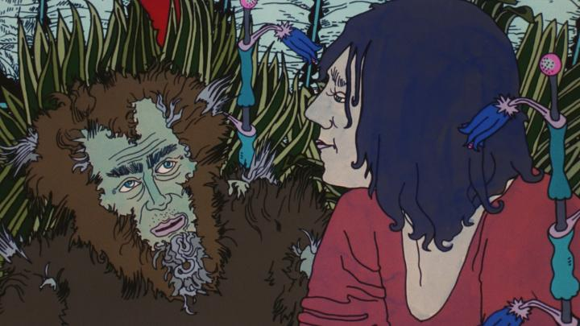

When I read the synopsis of the experimental film "The Cathedral of New Emotions," I thought I read that it was a film from 1972. That would have made sense, given the film's visual style, reminiscent of movies like "Yellow Submarine" and "Belladonna of Sadness." And I might have been slightly more forgiving of it if that was the case. But no, the movie is set in 1972, but was made in 2006, and I was offended that anyone thought this was an acceptable film to make that recently. I really had to strain myself to find something to appreciate from the film. I suppose there has always been an audience for experimental films, and this is perhaps the most experimental animated feature film I've ever watched through. To say there's a story is generous. It takes place in outer space in a small ship, where a commune of adults sit quietly as the ship drifts on. They are of senior age, but look like young adults, as time has stopped for them. They can't recall memories of Earth from their era, and sometimes ask each other what became of major events like wars or poltiical issues, to no avail. This is all told with far too much exposition for a film. The story goes everywhere and nowhere simultaneously. You might think this could be labelled as a "science fiction" story at least, but no, that's really nothing to do with the plot. This is just an experimental film, with no drama or romance or comedy of great importance. I was bothered by the sheer amount of exposition and dialogue. All in German, with subtitles of course. For a film like this, there's far too much of it, and because of how abstract the sentences are in their subject matter, you're brain needs to spend a lot of energy to keep up with it. Which is to say you might never actually LOOK at the film's animation, lest you miss something critical. Of course, there's not much critical in the dialogue, but you don't know that when you first watch it. It doesn't help that the acting is non-existent - characters are given androgynous, electronic synth voices that sound like a bad A.I.-generated robotic speaker, with virtually no emotion or entertainment value to listen to. The visuals and animation aren't all that great, so you wouldn't be missing much if you focused too much on the subtltes. It's that hard-outlne marker style that looks like it came from an underground grunge music newspaper. Kind-of like "Yellow Submarine," yes, but that film looked better, and was entertaining to boot! It's a visual style I never particularly liked, and the movie goes out of its way to make characters look grotesque, extending their waggy tongues as they speak or have intercourse with each other. There's a lot of erotic imagery (in space, there's not much else to do I guess), but the visual style is disturbing enough that it has no power, almost safe enough for a child to watch. I haven't even started yet on the abstract patterns, characters phasing in and out of the background, and other experimental techniques in use, seemingly only to confuse rather than enhance the story or experience. All with a very limited frame rate too, I might add. In short, this movie is downright ugly.  There's a certain class of films that might be better if you were... under the influence, let's say. In this case, "Cathedral" was clearly made by artists that were under the influence of a variety of substances. It's possible to come up with greatness with that, but this is just an utter mess, and no preparation on the viewer's part would help enhance the experience at all. If you smoked something before watching, I'd assume you'd be even more baffled than I was, and not in a good way! If anyone told me with a straight face that this movie was great, I'd be dumbfounded and would question their character. The one redeeming part is that the movie is mercifully short at barely 60 minutes, but even that feels too long here.I should have known better than to watch "The Cathedral of New Emotions." I bought it blind on Bluray from Deaf Crocodile, as one of their growing catelog of lesser-known European animated films. Often, being open to new experiences has warranted me well, but it's always a risk, and this is a case where things turned out poorly. At least with the Bluray, I can listen to the commentary and interviews to try to parse out something of value to this experimental wreck of art.
- "Ani" More reviews can be found at : https://2danicritic.github.io/ Previous review: review_The_Cat_Returns Next review: review_The_Colors_Within